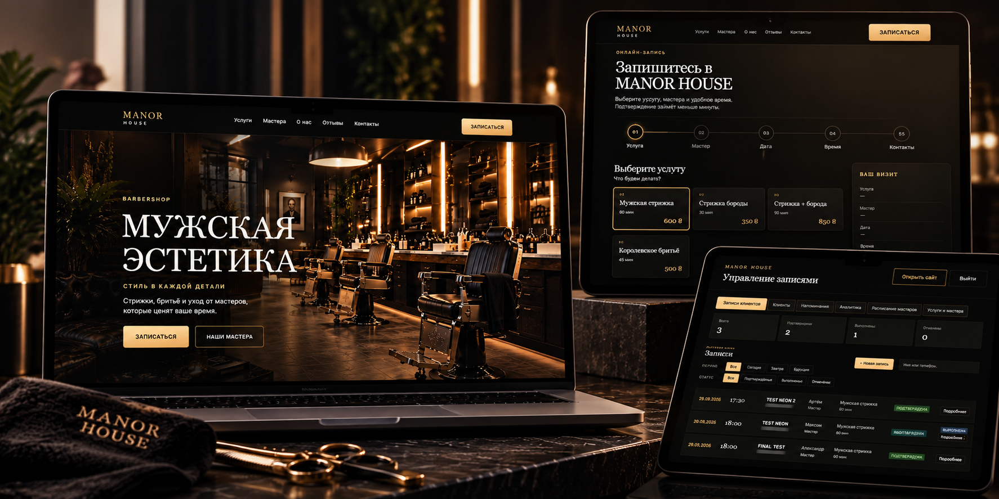

MANOR
HOUSE

FULL-STACK WEB APPLICATION
MANOR HOUSE
Система онлайн-запису та керування барбершопом: публічний сайт, PostgreSQL, Telegram-сповіщення і захищена CRM для роботи з клієнтами, розкладом та аналітикою.
Публічний огляд: сайт запису. CRM потребує доступу; кейс і роль автора ще не опубліковані.
Перший запуск демо на Render може тривати десятки секунд. Зачекайте на завантаження; прев’ю вище доступне без запуску демо.